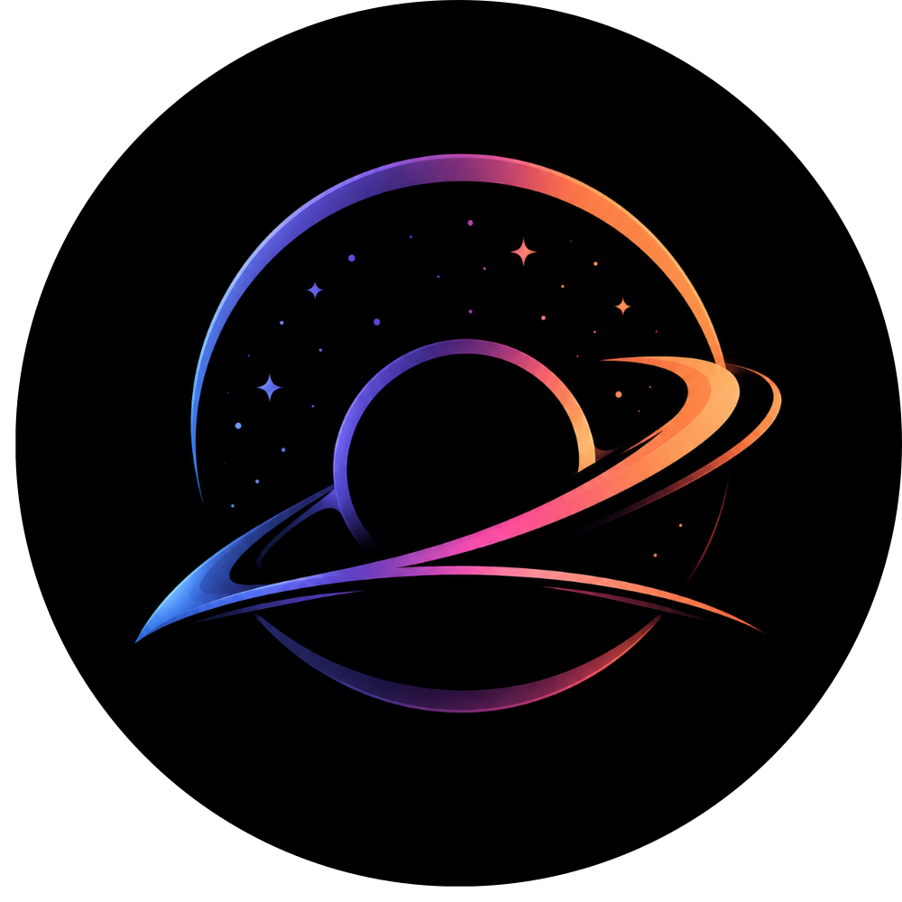

Tentang Kifusuru
Kenali risikomu,
siapkan perlindunganmu.
Kifusuru adalah platform edukasi keuangan yang membantu pengguna memahami seberapa siap kondisi keuangan mereka saat ini dalam menghadapi pengeluaran darurat yang tidak terduga.
Apa Fungsi Kifusuru?
Kifusuru membantu pengguna mengukur tingkat ketahanan keuangan saat ini, mengetahui risiko yang mungkin muncul saat krisis finansial, memahami seberapa lama mereka dapat bertahan, serta mengenal berbagai strategi perlindungan yang realistis dan dapat diterapkan.
Analisis Ketahanan
Pengguna memasukkan penghasilan, pengeluaran, dan uang tunai untuk melihat perkiraan ketahanan finansial mereka.
Simulasi Risiko
Berbagai skenario darurat dapat diuji untuk melihat dampak finansial yang mungkin terjadi.
Strategi Perlindungan
Alternatif perlindungan seperti tabungan otomatis, bantuan sosial, koperasi, pegadaian, dan lain-lain tersedia sebagai bagian dari jaring pengaman.
Disclaimer
Kifusuru adalah alat edukasi mandiri yang dirancang untuk membantu pengguna memahami kondisi keuangan serta mengeksplorasi berbagai pilihan perlindungan finansial. Hasil analisis dan rekomendasi tidak dapat dianggap sebagai nasihat keuangan profesional, nasihat investasi, atau nasihat hukum.
The Creators
Di buat oleh tim Horizon In Void

Johanes Padmo T.S
(Johan)
Louis Jonathan U.S
(Jojo)